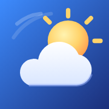

SkyCast
Live weather, radar & warnings
Get the SkyCast Shortcut
Tap it, then tap Add Shortcut. Search “weather” on your iPhone to open SkyCast.
Or add it as a full-screen app:
First open this page in Safari. Adding to the Home Screen only works from Safari.
- Tap Open SkyCast below.
- Tap the Share button ↑ at the bottom of Safari.
- Scroll down and tap Add to Home Screen.
- Tap Add. SkyCast is now an app on your Home Screen.
Open SkyCast
No downloads and no settings changes. It just saves SkyCast like an app.
- In Chrome, tap the ⋮ menu.
- Tap Add to Home screen or Install app.
Open SkyCast
💻 Put SkyCast on your computer
- Click the install icon at the right end of the address bar (a little screen with a down arrow).
- Or click the ⋮ menu → Cast, save and share → Install page as app.
- Click Install.
- Click the ⋯ menu at the top right.
- Click Apps → Install this site as an app.
- Click Install.
- In Safari's menu bar, click File → Add to Dock.
- Click Add. SkyCast shows up in your Dock and Launchpad.
Firefox can't install websites as apps. Open this page in Chrome or Edge to install SkyCast, or press Ctrl + D (⌘ + D on Mac) to bookmark it.
Open SkyCast
It opens in its own window, gets its own icon on your desktop or taskbar, and stays up to date by itself. Nothing to download from a store.